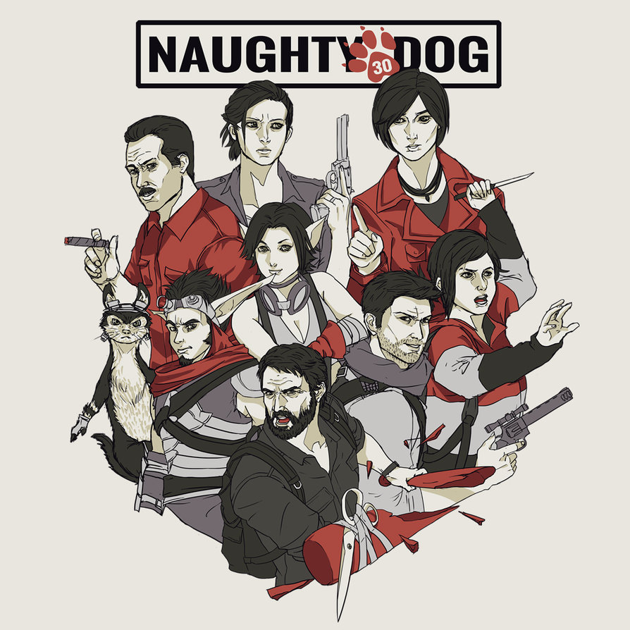

Naughty Dog on yhdysvaltalainen videopelejä valmistava yritys, jonka perustivat Andy Gavin ja Jason Rubin vuonna 1984.
Alun perin se oli nimeltään Jam Software. Se on ollut Sony Interactive Entertainmentin tytäryhtiö vuodesta 2001.
Naughty Dog tunnetaan sen ainutlaatuisesta pelinkehittelytavasta, sillä studiolla ei ole tuottajaa kummassakaan tiimissä.
Studiolla on muita vähemmän keskihallintoa. Naughty Dogilla on periaatteessa täysi vapaus pelisuunnittelussa.
Viralliset sivut
